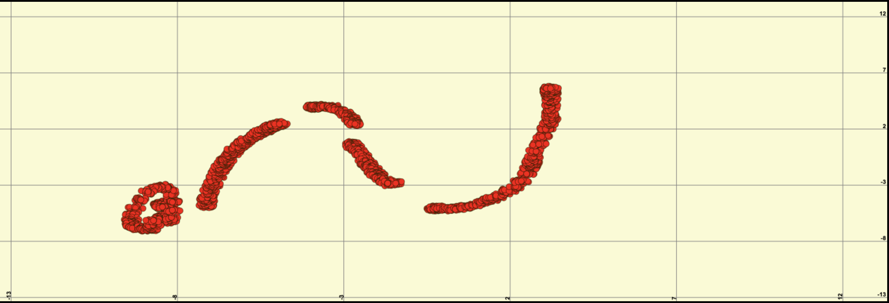
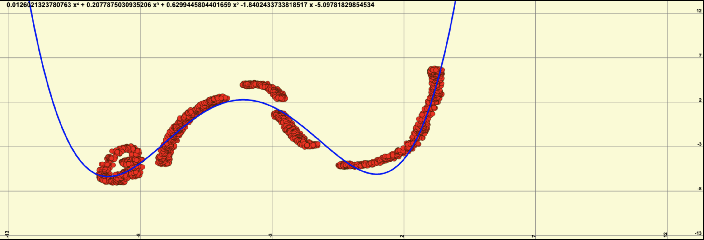

Résolution d'une équation par la méthode des moindres carrés
Traduisible et imprimable
Le problème
On part d'un nuage de points (quelque chose de nébuleux), un ensemble de points (x, y) enregistrés, qui représentent une courbe plus ou moins irrégulière,
voire complètement cahotique.
On cherche à déterminer une courbe lisse, représentée par une équation (qui comporte un nombre donné de paramètres), qui soit aussi proche que possible de ce nuage de points.
L'approche
Il s'agit donc ici de trouver les coefficients (aka paramètres) d'une équation, impliquant un nombre donné (choisi) de paramètres, afin que la courbe qui le représente soit aussi proche que possible d'un ensemble de points donnés.
Autrement dit, que la courbe trouvée colle autant que possible au nuage des points de départ.
|
Données initiales : Nuage de points  |
Données finales : Courbe (ici un polynôme de degré 4)  |
Exemple, illustré
La méthode des moindres carrés ne concerne pas que les fonction polynômes, loin de là.On veut ici déterminer les coefficients d'une courbe polynomiale du second degré, à partir d'un nuage de points enregistrés.
On choisit ici un degré 2 pour simplifier les équations qui suivent.
La résolution d'un polynôme de degré supérieur suivrait le même mode opératoire.
On cherche donc à déterminer les coefficients d'un polynôme du 2nd degré, dont les éléments sont aussi proches que possible des points d'un ensemble donné (enregistré à bord d'un bateau, dans le cas qui suit).
Les points peuvent être définis (par leurs coordonnés) de différentes manières, par exemple ici un cap compas (HDC, pour HeaDing Compass) et une route fond (COG, pour Course Over Ground) pour déterminer une courbe de déviation, un angle de vent réel et une vitesse du bateau pour déterminer des polaires, etc.
Pour la commodité de la notation, on prendra les points coordonnés génériquement, comme suit :
|
$$
P^{HDC}_{COG} = P^x_y
$$
|
, écrit aussi |
$$
y = f(x)
$$
|
où |
$$
f(x) = ax^2 + bx + c
$$
|
a, b, et c d'un polynôme pour lequel
y, c'est à dire que la différence
Ceci revient à calculer les coefficients
a, b et c pour lesquels la dérivée première de cette sommation des carrés des différences
par rapport à chacun des coefficients a, b et c est nulle, ce qui s'écrit :
x, on calcule la valeur de la fonction (ici polynôme) f(x), et on veut
que sa différence avec y soit la plus petite possible.Donc que la derivée de la fonction de cette différence (au carré, pour supprimer les histoires de signe) soit nulle.
|
$$ ([\Sigma(ax^2 + bx + c - y)^2])' = 0 $$
|
s'écrit aussi |
$$ ([\Sigma((ax^2 + bx + c - y) \times (ax^2 + bx + c - y))])' = 0 $$
|
-
Par rapport à
a:$ \dfrac{\partial S}{\partial a} = 2a\Sigma x^4 + 2b\Sigma x^3 + 2c\Sigma x^2 - 2\Sigma yx^2 = 0 $ -
Par rapport à
b:$ \dfrac{\partial S}{\partial b} = 2a\Sigma x^3 + 2b\Sigma x^2 + 2c\Sigma x^1 - 2\Sigma yx^1 = 0 $ -
Par rapport à
c:$ \dfrac{\partial S}{\partial c} = 2a\Sigma x^2 + 2b\Sigma x^1 + 2c\Sigma x^0 - 2\Sigma yx^0 = 0 $
y de côté, on simplifie par 2 :
-
$ a\Sigma x^4 + b\Sigma x^3 + c\Sigma x^2 = \Sigma yx^2 $
-
$ a\Sigma x^3 + b\Sigma x^2 + c\Sigma x^1 = \Sigma yx^1 $
-
$ a\Sigma x^2 + b\Sigma x^1 + c\Sigma x^0 = \Sigma yx^0 $
- Les termes $ \Sigma x^0 $ représentent le nombre de points dans la courbe à lisser.
- Un polynôme du 2nd degré a 3 coefficients, la dimension des matrices qu'on gère (carrée, ligne, et colonne) est donc 3.
Pour un polynôme de degré n, le travail à effectuer se "résume" ainsi à inverser la matrice carrée $ \Sigma x^{0->2n} $ et de
la multiplier par la matrice colonne $ \Sigma yx^{0->n} $ pour obtenir la matrice ligne des coefficients du polynôme recherché.
Cas d'une courbe de déviation
Précision : qu'est-ce que c'est que ce truc ?
À bord d'un bateau, on a un compas, qui permet de savoir dans quelle direction on se dirige, élément essentiel à la tenue de l'estime.
Le "nord vrai" (géographique) est celui des cartes.
Le "cap magnétique" est celui qui fait intervenir la déclinaison magnétique locale (qui varie suivant l'endroit où on se trouve sur la planète, et la date).
Le "cap compas" est celui indiqué par le compas, qui subit les influences magnétiques du bateau lui-même (métal, équipements électriques, etc).
La déviation est la différence entre le cap compas et le cap magnétique.
Elle dépend du bateau, et de son cap, et est donc une fonction du cap compas lui-même.
Sur un bateau en acier, elle peut atteindre des valeurs énormes - comme 40 degrés - dont il est sans aucun doute de bon ton de tenir compte...
On cherche ici à élaborer une courbe de déviation, à partir de points enregistrés depuis la station NMEA du bord.
Dans ce contexte, la station doit comporter un GPS, et un compas (compas électronique, donc). Le GPS permettra à la station NMEA de générer des chaînes RMC - qui vont contenir
la route fond (Course Over Ground, aka COG), le compas fournira à la station ce dont elle a besoin pour générer les Caps Compas (Heading, aka HDG, HDM, etc, suivant les stations).
Le fichier contenant les informations produites par la station NMEA aura ainsi une allure comme celle-ci :
. . .
$IIRMC,190402,A,0854.980,S,14006.028,W,00.0,008,031110,10,E,A*07
$IIVHW,,,126,M,00.0,N,,*61
$IIVLW,02839,N,000.0,N*53
$IIVWR,027,R,07.2,N,,,,*61
$IIDPT,012.3,+0.7,*40
$IIGLL,0854.979,S,14006.029,W,190403,A,A*56
$IIHDG,126,,,10,E*16
. . .
On note que le fichier peut contenir d'autres données (VHW, DPT, GLL, VLW, etc), qu'on ignorera ici.
Ce fichier sera ensuite travaillé pour produire un document où ne figureront que les données qui nous concernent ici, à savoir la déviation en fonction du cap.
Par exemple (en JSON ici) :
[
{ "hdc": 210.000000, "dev": 4.000000 },
{ "hdc": 210.000000, "dev": 4.000000 },
{ "hdc": 210.000000, "dev": -1.000000 },
{ "hdc": 210.000000, "dev": -2.000000 },
{ "hdc": 208.000000, "dev": -4.000000 },
. . .
]
Plus de détails sur ces opérations sont disponibles dans d'autres documents :
On considère donc que la forme générique d'une courbe de déviation est
Dans l'équation ci-dessus,
r est le Cap Compas, dev est la déviation (δ entre HDC et HDM, cap compas et cap magnétique).On cherche donc à définir une fonction
f pour laquelle la déviation dev est obtenue en fournissant r:
- HDC (Heading Compass)
- COG (Course Over Ground)
HDC (corrigé de la déclinaison locale)
et la route fond (COG) est bien la déviation d, que l'on cherche. Pas de dérive, pas de courant,
la route fond est égale à la route surface, qui est égale au
cap vrai du bateau.
Les éléments du nuage de points dont on dispose (élaboré à partir du logging) sont définis en
On cherche les valeurs de 5 coefficients :
On obtient les coefficients $ \begin{vmatrix} a & b & c & d & e \end{vmatrix} $ en résolvant :